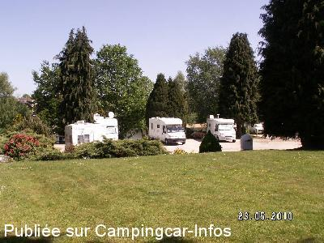
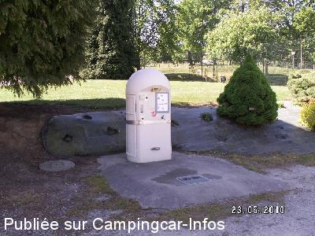
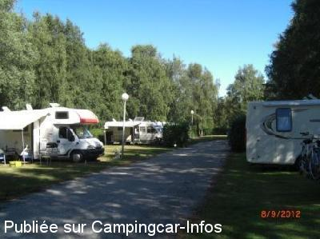
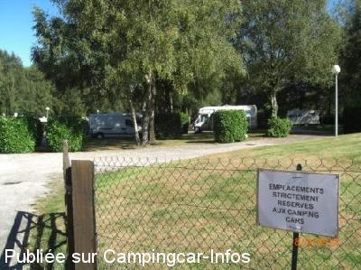
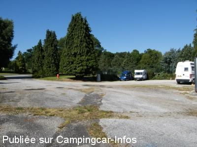

ASN = Aire de services avec stationnement nuit possible de :
LA FERRIÈRE AUX ÉTANGS
(N° 185)
Accès/adresse :
Le Mont Brûlé
61450 LA FERRIÈRE AUX ÉTANGS
61450 LA FERRIÈRE AUX ÉTANGS
Latitude : (Nord) 48.6595° Décimaux ou 48° 39′ 34′′
Longitude : (Ouest) -0.51717° Décimaux ou 0° 31′ 1′′
Tarif : 2014
Stationnement gratuit
Eau ou 1h d'électricité : 2 €
Paiement par monnayeur
Type de borne : AIRESERVICES
Services :


Commerces à proximité
Autres informations :
Ouverte toute l'année
20 emplacements
Tel mairie : +33(0)233 669 218

Le 17/08/2014 par Gilles

Le 17/08/2014 par Gilles

Le 23/10/2012 par

Le 23/10/2012 par pplou

Le 25/07/2009 par dominique
de
Cerise35
le 03/11/2015 :
Bonsoir
de passage vendredi 30 .10.2015
nous y avons passé la nuit
charmant village , calme
les commerçants sont accueillant
par contre la borne est maintenant à l'entrée du camping .
Accés facile
Bonsoir
de passage vendredi 30 .10.2015
nous y avons passé la nuit
charmant village , calme
les commerçants sont accueillant
par contre la borne est maintenant à l'entrée du camping .
Accés facile
de
Christophe
le 30/10/2011 :
De passage fin octobre. Aire calme. 3 camping-cars cette nuit. 2€ pour l'électricité qui s'est coupée au bout de 12 heures ( ? ). accés au vieux village et aux commerces à pied. à noter 3 autres camping-cars qui ont passé la nuit de l'autre côté de l'étang sans avoir trouvé l'aire.
De passage fin octobre. Aire calme. 3 camping-cars cette nuit. 2€ pour l'électricité qui s'est coupée au bout de 12 heures ( ? ). accés au vieux village et aux commerces à pied. à noter 3 autres camping-cars qui ont passé la nuit de l'autre côté de l'étang sans avoir trouvé l'aire.
de
quiniou yvon
le 03/06/2011 :
§
l'aire ce trouve a l'extérieur du camping.
gratuite avec six emplacements (nous étions 10 cc ce jours du 1/06/2011).
avec une borne de service a pièces 2€ pour eau et 2€ électricité.
calme et promenade autour de l'étang.
§
l'aire ce trouve a l'extérieur du camping.
gratuite avec six emplacements (nous étions 10 cc ce jours du 1/06/2011).
avec une borne de service a pièces 2€ pour eau et 2€ électricité.
calme et promenade autour de l'étang.
de
Ghislaine
le 07/09/2010 :
De passage en Juillet, nous avons pu y stationner. Endroit calme pour dormir, mais nous n'avons pas trouvé la borne des services ! Nous étions 4 CCaristes dans ce cas! Le camping fermé, l'endroit était mort et d'une tristesse! Enfin, après avoir circulé longtemps avant de trouver un endroit tranquille pour nous poser le soir, nous nous en sommes contentés.
De passage en Juillet, nous avons pu y stationner. Endroit calme pour dormir, mais nous n'avons pas trouvé la borne des services ! Nous étions 4 CCaristes dans ce cas! Le camping fermé, l'endroit était mort et d'une tristesse! Enfin, après avoir circulé longtemps avant de trouver un endroit tranquille pour nous poser le soir, nous nous en sommes contentés.
de
moovéo 76
le 24/08/2010 :
Aire très calme, mais les cloches sonnent tous les 1/4h 1/2h 1h. Dommage que la commune ne se sert pas du camping qui est fermé pour nous accueillir.
Aire très calme, mais les cloches sonnent tous les 1/4h 1/2h 1h. Dommage que la commune ne se sert pas du camping qui est fermé pour nous accueillir.
de
Laurent59
le 13/08/2010 :
Bonjour. De passage fin juillet, aire calme, nous étions 6 CC. A noter le camping voisin était fermé.
Bonjour. De passage fin juillet, aire calme, nous étions 6 CC. A noter le camping voisin était fermé.
de
jacques
le 02/10/2009 :
Très calme, agréable, boulangerie à proximité... A recommander...
Très calme, agréable, boulangerie à proximité... A recommander...
de
STEPHELIJUL
le 08/11/2008 :
Bonjour. Aire très calme. A recomander.
Bonjour. Aire très calme. A recomander.
de
milinawel2
le 05/06/2008 :
Nous étions 5 CC dans ce joli cadre. La borne dans l'après midi n'était pas accessible à cause des voitures des boulistes au demeurant très sympathiques. La soirée et nuit très calme. Merci à la municipalité de maintenir cette aire.
Nous étions 5 CC dans ce joli cadre. La borne dans l'après midi n'était pas accessible à cause des voitures des boulistes au demeurant très sympathiques. La soirée et nuit très calme. Merci à la municipalité de maintenir cette aire.
de
dominique et patou
le 20/02/2008 :
La borne était hors service. Nuit calme, au matin croissants chauds à la boulangerie du village. Halte agréable, nous reviendrons.
La borne était hors service. Nuit calme, au matin croissants chauds à la boulangerie du village. Halte agréable, nous reviendrons.
de
le borgne
le 10/01/2007 :
La borne était hors-service en raison des risques de gel alors qu'il faisait 12° et pas de date de remise en eau.
La borne était hors-service en raison des risques de gel alors qu'il faisait 12° et pas de date de remise en eau.